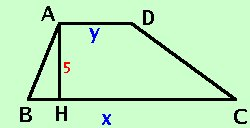

|
In un trapezio di area 150 m2 l'altezza vale 5 metri e la base maggiore e' doppia della minore. Calcolare la misura delle due basi  Come prima cosa costruiamo la figura Dai Dati ho che l'altezza vale 5 m AH _= 5m La prima relazione dice che l' area e' 150 m2
BC _= 2 AD _ Devo trovare la misura delle basi, quindi BC _ = x AD _ = y sostituisco nella prima relazione
moltiplico per 2 a destra e sinsitra del'uguale ed ottengo (x+y)·5 = 300 5x + 5y = 300 Divido tutti i termini per 5 ed ottengo x + y = 60 sostituisco nella seconda relazione x = 2y Metto a sistema le due relazioni x = 2y sostituisco il valore della x della seconda equazione nella prima equazione x = 2y sommo x = 2y nella prima equazione divido entrambe i termini per 3 x = 2y Sostituisco il valore della y che ho trovato, nella seconda equazione x = 2 · 20 = 40 Ordino y = 20 Quindi: BC _ = x = 40 m AD _ = y = 20 m Da notare che la figura non corisponde alle proporzioni: se fai il compito prima in brutta copia quando lo copi in bella cerca di rispettare le proporzioni della figura |